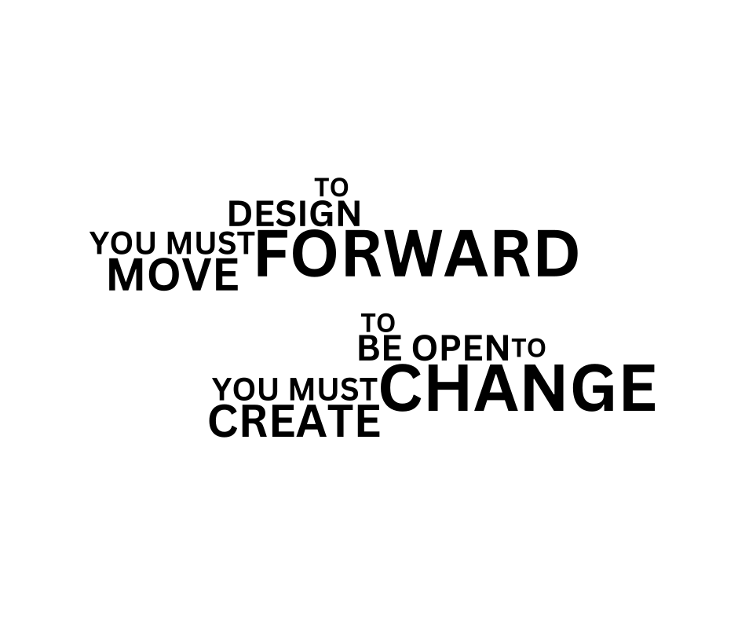
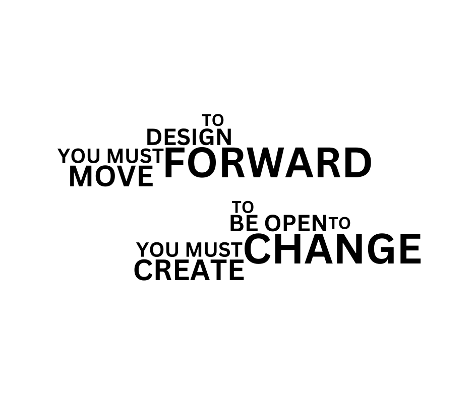
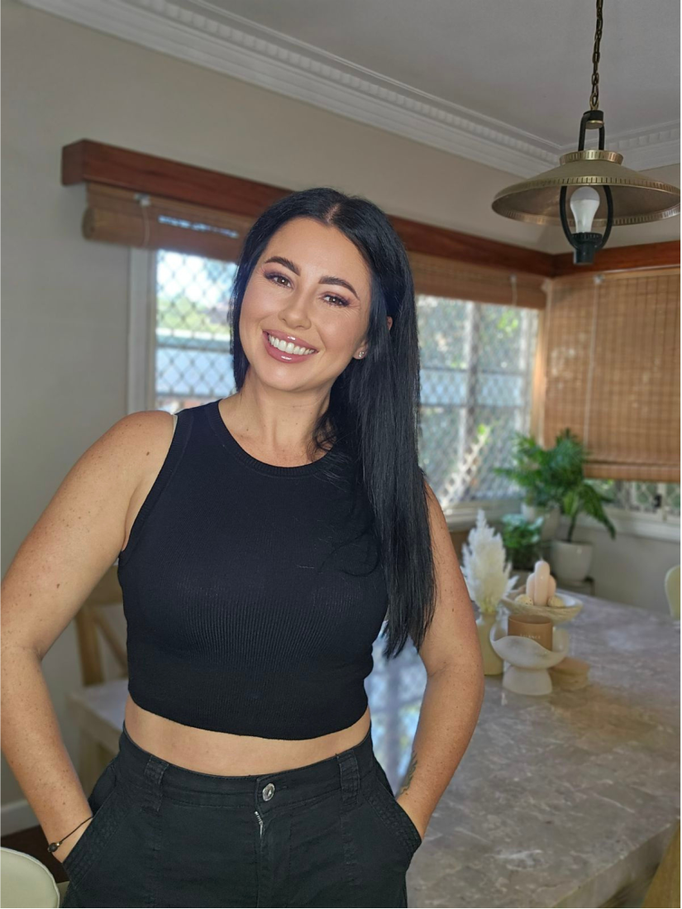

We embrace the importance of our philosophy
"To design forward you must move forward; to be open to change you must create change"
because it encapsulates proactive innovation and adaptability.
By adopting this approach, we drive progress, we stay agile, relevant and we empower
ourselves to shape the future. It's a commitment to continuous evolution that ensures our
relevance and success in an ever-changing world.

ABOUT US
"Experience the Sutton Difference: Going Above and Beyond, Setting Us Apart"
We are Interior Designers where creativity meets functionality, priding ourselves on being more than just interior designers; we're visionaries who fuse creativity with functionality.
With a wealth of experience in creative design, space planning, and project management, our seasoned team is dedicated to turning your vision into reality. Specializing in commercial design, but not limited to, we blend aesthetics with practicality to optimize your space for productivity and comfort.
Armed with extensive on-field product knowledge and a hands-on approach, we meticulously curate every detail to perfection, ensuring each project exceeds expectations, from colour consultation to adept problem-solving.
Entrust us to transform your space into a captivating masterpiece that not only inspires but also delights at every turn.
OUR TEAM
KIRSTY SUTTON-SOUTHWICK
DIRECTOR
INTERIOR DESIGNER
Allow me to introduce Kirsty, the creative force behind Sutton Interior Design.
As the founder, she brings a wealth of experience and expertise to the industry, with a focus on both commercial and high-end residential furniture.
Kirsty's proficiency extends to finishes, project management, soft-wiring, colour consultation, and space planning.
Proficient in AutoCAD and SketchUp, she brings ideas to life with precision and ingenuity. From site measurements to floorplans, Kirsty's attention to detail is unparalleled. A natural problem solver, she consistently exceeds expectations.
Renowned for her hands-on project management approach, Kirsty has cultivated strong relationships with exclusive clients, emphasizing trust and reliability in every interaction.
SERVICES
"Tailored Design Solutions:
Where Your Vision Comes to Life"
Our business offers a comprehensive range of design services tailored to meet the unique needs of each client.
Our design packages are flexible and customizable, ensuring that you receive exactly what you need for your project, whether it's commercial or residential.
Depending on your preferences and the location of the site, we can conduct site visits or work off floorplans to accommodate your requirements.
Our design packages encompass a variety of elements, including space planning, 3D visuals, and detailed furniture floorplans.
Additionally, our FF&E schedules can be tailored to include furniture only, or they can encompass finishes, soft-wiring plans, and color consultation, among other features.
We also provide expert project management services to ensure that your project is completed seamlessly and efficiently.
Furthermore, our team offers styling services to add the finishing touches to your space.
Whether you require a fully customized package or individual services, there's no limit to what we can offer to bring your vision to life.
Contact us today to discuss your project needs and schedule a consultation!"
CONTACT
US
SUTTON INTERIOR DESIGN
BRISBANE, QLD
0412 334 534
k.sutton@suttoninteriordesign.com.au
INSIGHTS
Why are colour consultations so important?
05.05.24
Color picking may seem simple on the surface because it's a task people encounter daily in various contexts, from choosing clothing to selecting paint for walls. However, the complexity...
READ MORE